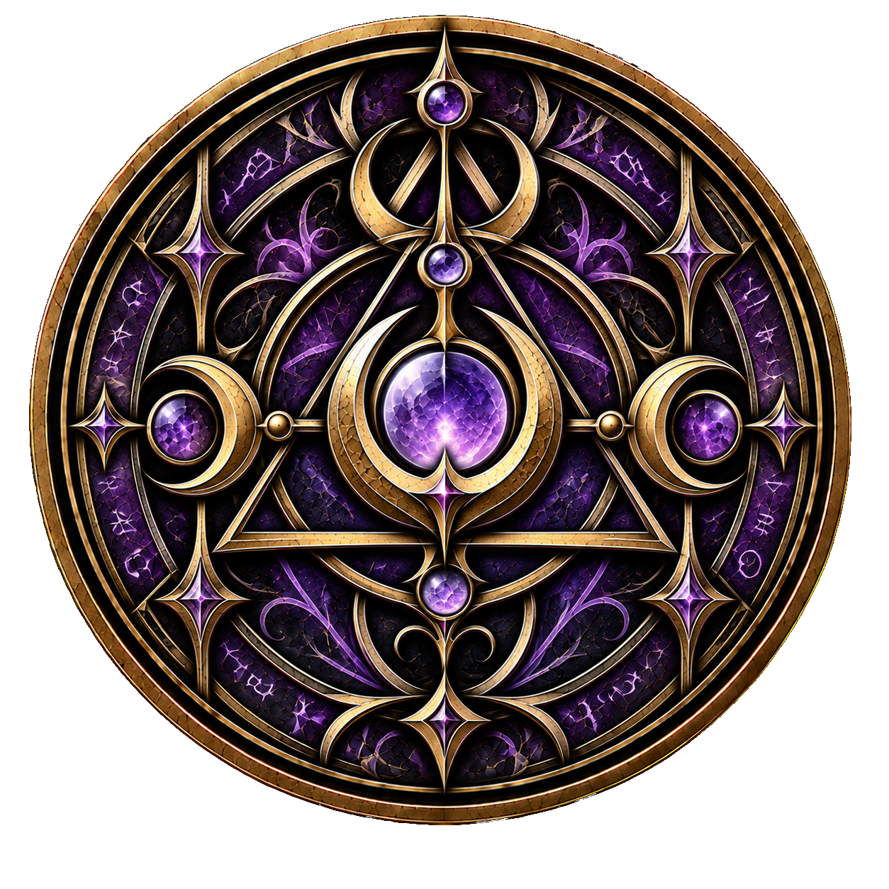

← Zum Artikel „Wesen“Weltwiki · Wesen
Hexen
Hexen sind Wesen, die verborgen unter den Menschen leben. Wie auch andere übernatürliche Wesen halten sie ihre Existenz vor der menschlichen Bevölkerung geheim.
Besonders auffällig sind Hexen durch ihre ausnahmslos roten Haare. Sie gelten innerhalb der Hexengesellschaft als sichtbares Zeichen ihrer Herkunft und Identität. Das gilt gleichermaßen für weibliche wie für männliche Hexen. Sich die Haare zu färben, wird deshalb in vielen Hexenzirkeln nicht lediglich als Veränderung des eigenen Aussehens verstanden, sondern als Ablehnung der eigenen Herkunft und ist häufig verboten.
Hexen besitzen eine ähnliche Lebenserwartung wie Menschen. Ihre Zugehörigkeit zur Spezies wird vererbt.
Hexenzirkel
Die meisten Hexen organisieren sich in Hexenzirkeln. Diese Gemeinschaften bieten ihren Mitgliedern Zusammenhalt und Schutz und werden üblicherweise von einem Rat geführt. Jeder Zirkel besitzt eigene Regeln und Traditionen, weshalb sich ihre Lebensweisen und gesellschaftlichen Vorstellungen voneinander unterscheiden können.
Unabhängige Hexen existieren ebenfalls, sind jedoch vergleichsweise selten. Für viele Hexen überwiegen die Vorteile und der Schutz, die ihnen die Zugehörigkeit zu einem Zirkel bietet.
Angeborene Magie
Die natürliche magische Begabung der Hexen besteht darin, Naturgeistern ihren Willen aufzuzwingen. Dadurch können sie in begrenztem Umfang Einfluss auf die Elemente nehmen. Dazu gehören unter anderem Feuer, Wind, Flüssigkeiten und Erde.
Die Möglichkeiten einer gewöhnlichen Hexe sind dabei wesentlich begrenzter, als der Begriff der Elementarkontrolle zunächst vermuten lässt. So kann eine Hexe beispielsweise mithilfe von Naturgeistern eine Kerze entzünden, wäre jedoch nicht in der Lage, auf dieselbe Weise einen ganzen Hausbrand zu kontrollieren. Zu den anspruchsvolleren Anwendungen, die für viele Hexen erreichbar sind, gehört das Fliegen auf einem Besen. Dabei wird nicht der Besen selbst verzaubert. Stattdessen werden Windgeister dazu gezwungen, ihn und die darauf sitzende Hexe zu tragen.
Ein sichtbares Zeichen aktivierter Magie ist das Leuchten der Augen. Die genaue Farbe kann von Hexe zu Hexe variieren, gewöhnlich zeigt sich jedoch ein violetter Schimmer. Je nach Stärke kann dieses Leuchten von einem leichten Funkeln bis zu einem deutlich sichtbaren Schein reichen.
Innerhalb der Hexengesellschaft besitzt das Augenleuchten darüber hinaus eine eigene soziale Bedeutung. Hexen können ihre Magie bewusst aufleuchten lassen, ohne damit unmittelbar einen Naturgeist zu kontrollieren. Besonders in größeren Gruppen dient dies als Ausdruck von Zustimmung und Unterstützung und kann damit eine ähnliche Funktion wie zustimmender Applaus erfüllen. Mehrere Hexen können auf diese Weise gemeinsam ihre Magie aufleuchten lassen.
Obwohl Hexen Naturgeistern ihren Willen aufzwingen können, sind sie normalerweise nicht in der Lage, diese tatsächlich wahrzunehmen. Sie kontrollieren damit Wesen, die ihren eigenen Sinnen verborgen bleiben. Lediglich besonders mächtige Hexen können Naturgeister hören.
Neben dieser angeborenen Begabung existieren erlernbare magische Praktiken wie Flüche und andere Rituale. Diese stellen jedoch eine äußerst anspruchsvolle Form der Magie dar und werden nur von wenigen Hexen beherrscht.
Männliche Hexen
Die natürliche Begabung zur Kontrolle von Naturgeistern zeigt sich normalerweise ausschließlich bei weiblichen Hexen. Grundsätzlich schlummert dieselbe Fähigkeit auch in männlichen Angehörigen der Spezies, kann von ihnen jedoch unter gewöhnlichen Umständen nicht genutzt werden. Nur unter sehr speziellen Voraussetzungen kann diese Begabung erwachen. Das Wissen darüber ist innerhalb der Hexengesellschaft nahezu unbekannt.
Da männliche Hexen deshalb traditionell als magisch unbegabt gelten, nehmen sie in vielen Hexenzirkeln eine stark untergeordnete gesellschaftliche Stellung ein. Das Wort einer weiblichen Hexe besitzt Autorität, während männlichen Hexen kaum eigene Entscheidungsgewalt zugestanden wird. Männer werden innerhalb eines Zirkels eher als Diener der weiblichen Mitglieder betrachtet und haben deren Anweisungen Folge zu leisten.
Diese Hierarchie reicht bis in die unmittelbare Familie. Selbst zwischen Geschwistern kann eine Schwester ihrem Bruder gegenüber uneingeschränkte Autorität besitzen. Dabei handelt es sich nicht lediglich um eine gesellschaftliche Erwartung oder symbolische Rangordnung, sondern um eine tatsächlich gelebte Form der Unterordnung.
Auch Menschen werden von vielen Hexen traditionell auf einer ähnlich niedrigen gesellschaftlichen Stufe betrachtet.
Diese Vorstellungen sind jedoch nicht in allen Hexenzirkeln vollkommen identisch. Zudem befindet sich die Stellung männlicher Hexen innerhalb der bekannten Hexenwelt zunehmend im Wandel, wodurch die traditionelle Ordnung nicht mehr überall uneingeschränkt Bestand hat.